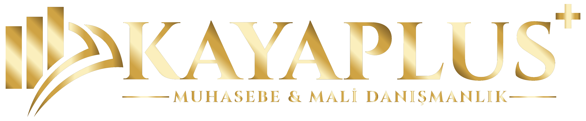

Neden Kaya Plus?

KKTC'de mali süreçleri sade ve güvenli yöneten ekip
Kuruluş, muhasebe, vergi ve bordro tarafında ihtiyacı hızlıca ayırır; süreci gereksiz karmaşa olmadan net şekilde ilerletiriz.
Duruş
Gerçek ofis, görünür yapı
Süreç
Aşama aşama takip
Odak
Yerli ve yabancı yatırımcı